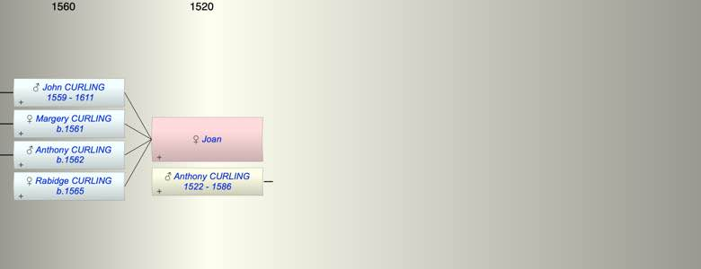

| [Index] |
| Joan |
|  |
| +. Anthony CURLING (1522 - 1586) |
| Children (4): |
| John CURLING (1559 - 1611) |
| Margery CURLING (1561 - ) |
| Anthony CURLING (1562 - ) |
| Rabidge CURLING (1565 - ) |
| Grandchildren (10): |
| Thomas CURLING (1588 - 1589), Mary CURLING (1592 - ), Godly CURLING (1594 - ), Margery CURLING (1596 - ), WIlliam COPPIN (1589 - ), Suzanna COPPIN (1592 - ), Stephen COPPIN (1596 - ), Anthony CURLING (1589 - ), John CURLING (1591 - ), William CURLING (1592 - ) |
| Events in Joan's life | |||||
| Date | Age | Event | Place | Notes | Src |
| abt 1559 | Birth of son John CURLING | ||||
| abt 1561 | Birth of daughter Margery CURLING | ||||
| 1562 | Birth of son Anthony CURLING | Note 1 | |||
| abt 1565 | Birth of daughter Rabidge CURLING | ||||
| 1586 | Death of husband Anthony CURLING (aged 64) | St Laurence | Note 2 | ||
| 1611 | Death of son John CURLING (aged 52) | St Laurence | Note 3 | ||
| Joan died (no date) | 1582 or 1588 at St L? | ||||
| Note 1: bap at St L 13 Feb 1562/63 ex MW & MB |
| Note 2: buried 26 Aug 1586 at St L ex FMP PR |
| Note 3: buried at St Laurence 14 Dec 1611 ex MW MB has Oct |
| Created on a Mac™ using iFamily for Mac™ on 8 Oct 2023 |